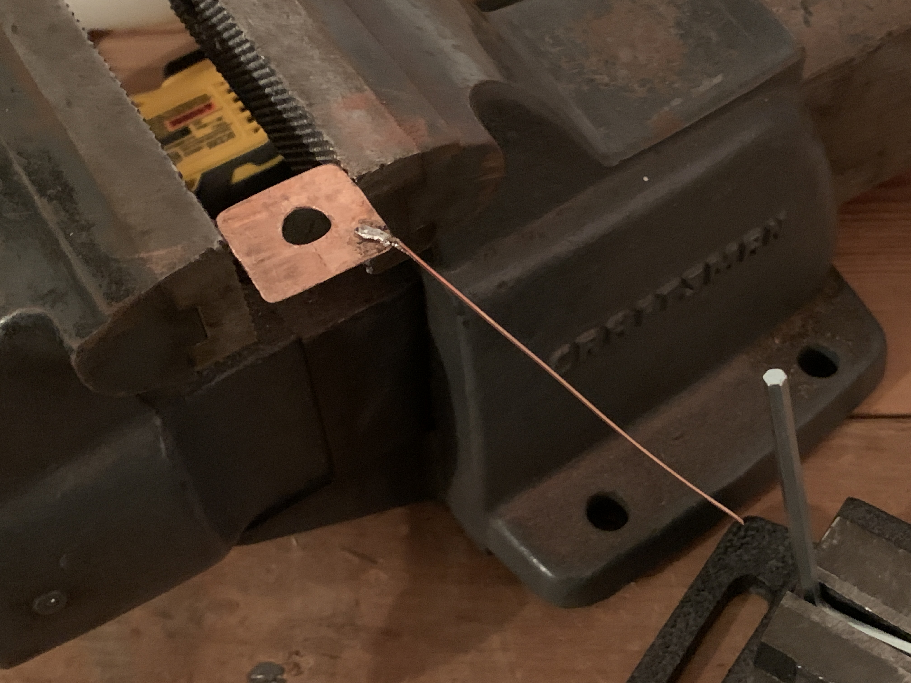

Overview

Flight Tracker is a web application that allows users to track flights in real time. It is built using a ground plane antenna, an SDR, and a Raspberry Pi. Data is decoded using Dump1090 and is displayed on a custom web page hosted by the Pi.

Note: the server is not currently running and the tracker page is static.
Build Process
This project started with the antenna. I decided to build a ground plane antenna that would be able to receive 1090 MHz ADS-B signals from overhead aircraft. The antenna is made from a flattened copper pipe and 1/4 wavelength coax center conductors.
Antenna construction

Completed antenna. An F connector was used to easily interface with the ground plane, radiating element, and coax cable.
Next came interfacing with the antenna through software. I used a Raspberry Pi 3B and an RTL-SDR dongle to digitize the signals. I configured Dump1090 to work on the Pi and made a backend Python script to read from Dump1090 and generate HTML using Pydeck. This HTML and the raw JSON is then served using NGINX through port forwarding. The final rendering takes the form of an iframe on the web interface. The entire software stack runs from boot on the Pi.
The interface gets updates approximately every five seconds and they are reflected seamlessly and interactively on the web page. The backend also keeps track of various all-time records such as the highest altitude and the greatest speed.

Current interface

Displayed list of detected planes
I then tested the entire system by going oustide and holding the antenna over my head (confusing my neighbors in the process). I was able to see aircraft both overhead and on the web page. I decided I would make a more permanent setup.
3D printing custom antenna mount
Tower to mount antenna in attic. Electrical box at bottom houses the SDR and serves as a heatsink and for inteference protection.

Tower positions antenna at top of attic
Top of attic = heat = bad for 3D print
... = thicker mount and 100% infill
With the deformation of the 3D print, I began to get concerned about the thermal performance of the Pi and SDR. I mounted the Pi in a fan case and proceeded to mount a CPU cooler to the SDR.
Some of the heat-conducting material in the electrical box. Thermal paste was also used.
CPU cooler mounted to box. Totally overkill and I'm all for it.
Fully cooled system. The Pi can be seen towards the bottom of the image.